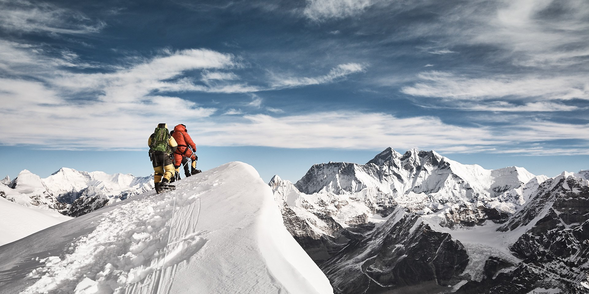

Восхождение на Эверест 8848 м впервые было осуществлено с Непала в далеком 1953 году сэром Эдмундом Хиллари и шерпой Тенцингом Норгеем. Это был действительно выдающийся поступок мирового масштаба.
С тех пор многое изменилось, новые технологии, умения и знания сделали восхождение на Эверест более доступным и безопасным. На вершину уже поднялось 5351 человек со всего мира (по состоянию на 2017 год) и ежегодно в успешный сезон подымается еще около 600 человек (из них половина - шерпы).
Восхождение на Эверест – это дорогостоящая и чрезвычайно сложная задача, под силу лишь единицам. 14 мая 2018 года Тарас Поздний (руководитель Кулуара), Роман Городечный и Дима Семеренко вместе стояли на вершине мира. Предстоял еще нелегкий спуск, но цель была достигнута. Из трех членов команды Эвреста все три сходили на вершину.
Восхождение на Эверест – это дорогостоящая и чрезвычайно сложная задача, под силу лишь единицам. 14 мая 2018 года Тарас Поздний (руководитель Кулуара), Роман Городечный и Дима Семеренко вместе стояли на вершине мира. Предстоял еще нелегкий спуск, но цель была достигнута. Из трех членов команды Эвреста все три сходили на вершину.
Что и говорить, к подбору снаряжения на Эверест нужно подойти со всей ответственностью. Можно руководствоваться одним правилом - берите самое теплое, жарко не будет. С собой нужно иметь:
| Максимум температура (°C) | Средний температура (°C) | Минимум температура (°C) | Норма осадков (мм) | |
|---|---|---|---|---|
| Январь | 1.9 | -3.8 | -9.5 | 23 |
| Февраль | 5.6 | -0.5 | -6.5 | 26 |
| Март | 11.7 | 5.3 | -1.1 | 59 |
| Апрель | 18.8 | 12.1 | 5.4 | 82 |
| Май | 24.4 | 17.9 | 11.4 | 121 |
| Июнь | 29.2 | 22.8 | 16.5 | 130 |
| Июль | 31.9 | 25.5 | 19.1 | 107 |
| Август | 30.8 | 24.2 | 17.6 | 107 |
| Сентябрь | 26.3 | 19.5 | 12.8 | 118 |
| Октябрь | 20.2 | 13.3 | 6.5 | 74 |
| Ноябрь | 11.4 | 5.4 | -0.5 | 48 |
| Декабрь | 4 | -1.4 | -6.8 | 32 |